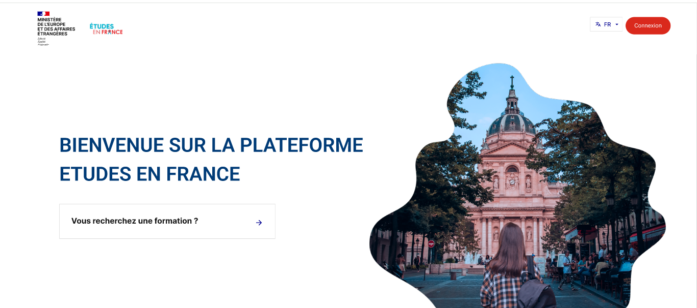
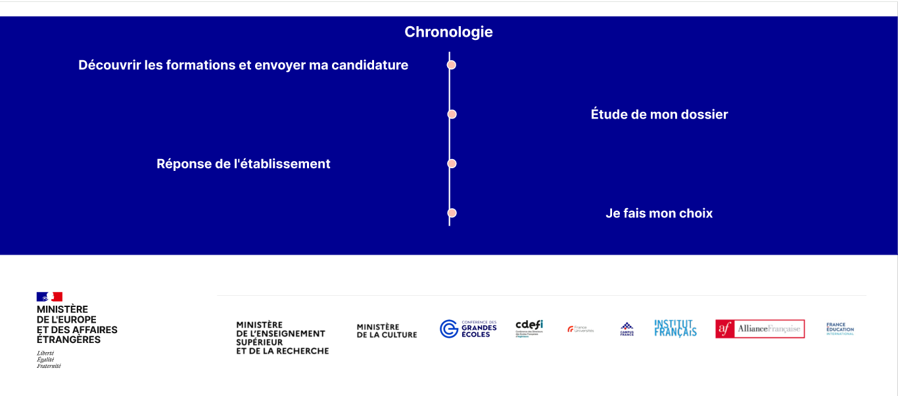
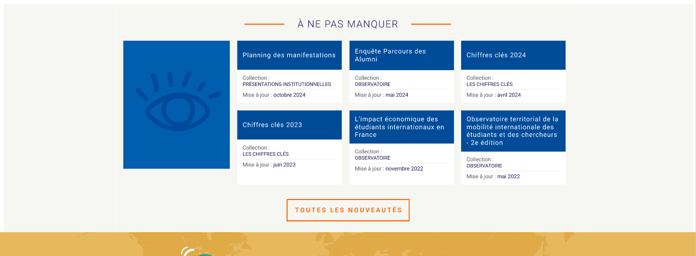
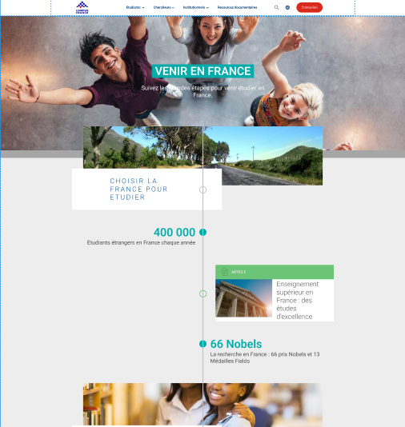
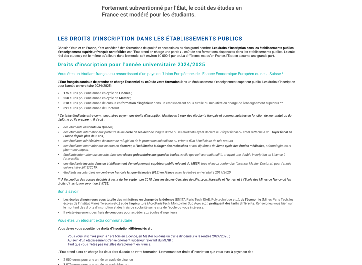
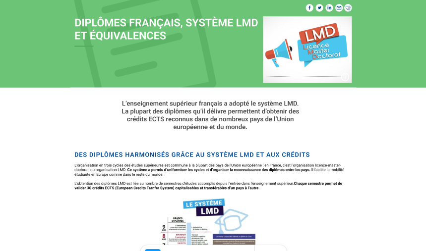
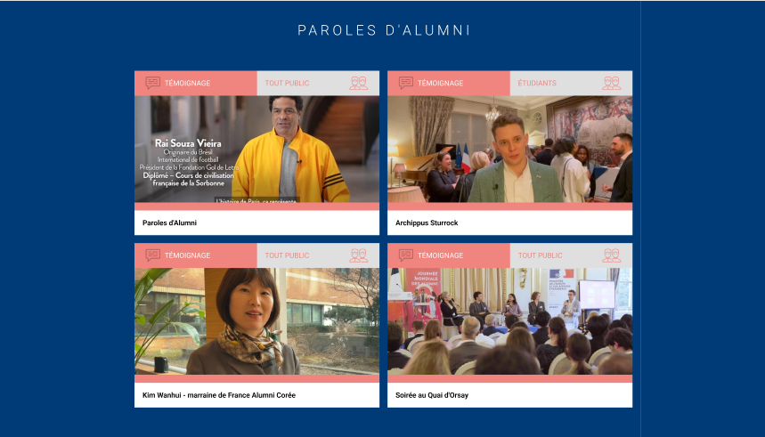

Points Positifs
- Structure claire avec les champs de connexion bien espacés
- Options clairement visibles pour la récupération du mot de passe et la création de compte
Points Négatifs
- Manque de message de bienvenue ou d'explication contextuelle

Points Positifs
- Navigation simple et intuitive
- Titre clair et accueillant et reflète le contexte
Points Positifs
- Image illustrative pertinente
- Dropdown menu bien visible
Points Négatifs
- Le sélecteur de pays pourrait bénéficier d'une recherche rapide

Points Positifs
- Timeline verticale claire et intuitive
- Étapes du processus bien définies
- Bonne hiérarchie visuelle
Points Négatifs
- Intégrer des estimations de temps pour chaque étape
- Possibilité d'ajouter des icônes pour chaque étape
Points Positifs
- Barre de recherche bien visible
- Navigation simple et intuitive
- Titre clair et accueillant
- Présentation claire des différentes sections
Points Négatifs
- Le contraste du texte sur l'image pourrait être amélioré

Points Positifs
- Organisation claire des actualités
- Dates de mise à jour visibles
Points Négatifs
- Intégrer un système de filtrage

Points Positifs
- Message concis et impactant
- Design minimaliste
- Message motivant

Points Positifs
- Informations détaillées sur les droits d'inscription
- Transparence sur les coûts
Points Négatifs
- Texte trop dense
- Manque de visuels

Points Positifs
- Informations détaillées sur les diplômes
- Reconnaissance internationale
Points Négatifs
- Texte trop dense
- Manque de visuels

Points Positifs
- Témoignages inspirants
- diversité des profils
Points Négatifs
- absence de filtres,texte trop long.
Points Positifs
- Informations Complètes
- Liens Utiles
Points Négatifs
- texte trop dense
- absence de guides visuels
Points Positifs
- Informations détaillées sur les démarches pour chercher un emploi en france
- conseils pratiques(CV, lettre de motivation ....)
- liens utiles
Points Négatifs
- absence de guides visuels
Remarques Générales
- Il n'y a pas de mention d'un support en direct ou d'une assistance en ligne pour aider les utilisateurs en temps réel
Conclusion
Merci pour votre attention !